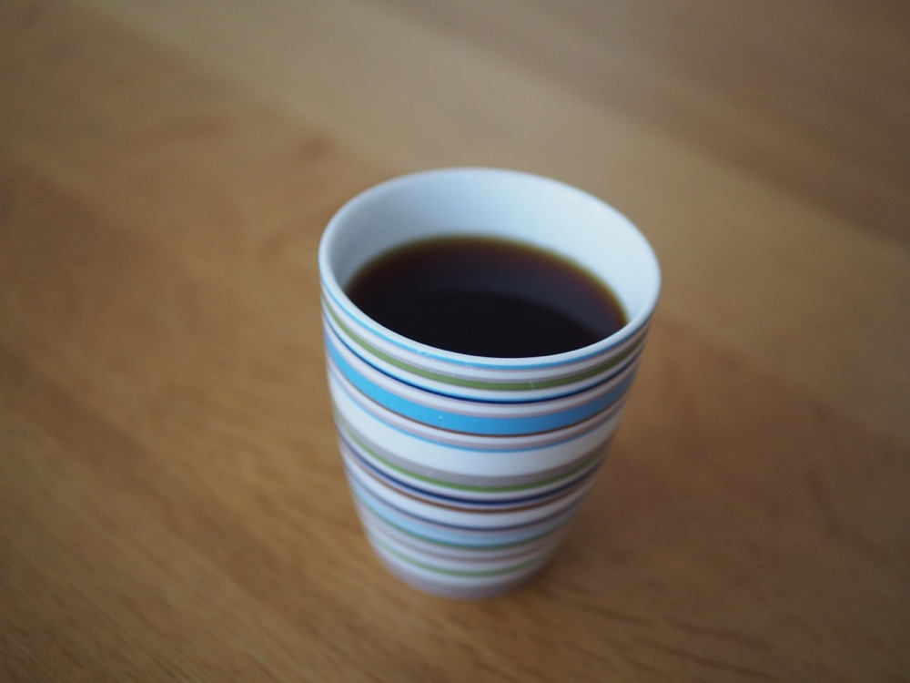

V60のペーパーフィルター
——みさらしと酸素漂白の違い、ステンレスという選択肢

コーヒーに関わる仕事をしていることもあり、日々何杯もハンドドリップを淹れます。ドリッパーを手に入れると、次に迷うのがフィルター選びです。茶色いものと白いもの、ふたつのサイズ。棚の前で少し立ち止まる場所です。
V60用のフィルターは円錐形で、カリタ式やメリタ式の台形ドリッパーには合いません。最初の一箱を選ぶとき、あるいは定番を決め直すときのために、違いを整理しました。参考にしたのは、実際に使っている方々のレビューです。
選び方の整理
見るところは3つあります。
- 色 — みさらしか、酸素漂白か。紙の匂いの感じ方が分かれるところ
- サイズ — 1〜2杯なら01、1〜4杯なら02
- 紙か、ステンレスか — 味の傾向と、日々の手間が変わる
※本文中の商品リンクはアフィリエイトリンクです（PR）。
一覧
- HARIO 酸素漂白 VCF-02（100枚）¥325
- HARIO みさらし VCF-02-100M（100枚）¥352
- HARIO みさらし VCF-01（100枚・1〜2杯用）¥399
- HARIO みさらし VCF-02-100MK（100枚・箱入り）¥438
- ステンレスフィルター（円錐・1杯用）¥1,880
※価格・レビュー件数は2026年8月5日時点の楽天市場の情報です。
みさらしと酸素漂白
茶色い「みさらし」は漂白の工程を通っていない紙、白いほうは酸素系で漂白した紙です。塩素はつかわれていないので、白だから体に悪いということはありません。
違いが出るのは紙の匂いです。みさらしのレビューは「匂いがコーヒーに移る気がする」という声と「まったく気にならない」という声にはっきり割れています。酸素漂白のほうには、匂いへの言及がほとんど見当たりません。
気になる場合は、抽出のまえにフィルターへお湯を通す「リンス」というひと手間でだいぶ軽くなります。逆に言えば、その習慣がないなら白を選ぶほうが穏やかです。価格はいまのところ酸素漂白のほうが安く、100枚で325円。無漂白だから安い、というイメージは当てになりません。
サイズ
01は1〜2杯用、02は1〜4杯用。ドリッパー本体のサイズに合わせるのが原則で、02のドリッパーに01の紙は使えません。迷うなら02です。02の紙で1杯だけ淹れることはできますが、その逆はできないからです。
それぞれの性格
HARIO 酸素漂白 VCF-02（100枚・¥325）

匂いの心配が少なく、今回くらべた中ではいちばん安い。最初の一箱にはこれを勧めます。ただ、茶色い紙のもつ雰囲気は、当然ながらありません。
HARIO みさらし VCF-02（100枚・¥352〜）

無漂白を選びたい人の定番です。リンスをすれば匂いはほとんど残りません。ただし「紙の匂いが気になる」というレビューも一定数あり、リンスの習慣がない人には少し向きが違うかもしれません。
ステンレスフィルター（円錐・¥1,880）

紙を買い続けなくていいのが最大の利点です。紙が吸ってしまうオイルがそのままカップまで届くので、味に厚みが出ます。一方で、微粉が底に沈みます。これが気になって紙に戻る人も一定数いて、使うたびに洗う手間もあります。最初のひとつを、高いものから試さないほうがいいと思います。
すっきりした味が好きなら紙、オイルの厚みが好きならステンレス。どちらが上ということではなく、好みの分かれ目です。
割れている声
- 紙全般 — 箱なしの袋で届くと置き場所に困る、という声。箱入りかどうかは買うまえに確認したほうが安全です
- ステンレス — 微粉が気になって紙に戻った、がいちばん多い離脱の理由

選ぶなら
- 迷ったら、酸素漂白の02。匂いの心配がなく、100枚325円で1杯あたり3円ほど
- リンスの習慣がある、あるいは無漂白を選びたいなら、みさらしの02
- 1日に何杯も淹れる人、味に厚みがほしい人は、ステンレスをいちど。合わなければ紙に戻ればいいだけです
フィルターは毎日の消耗品です。数十円の差より、自分の淹れ方に合っているかで選ぶほうが、満足度の高い買いものになると思います。